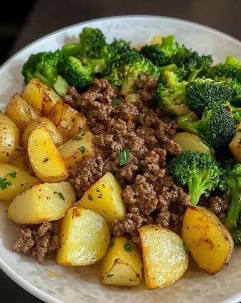

Beef & Potatoes

Description
This recipe is a beef, potato, and broccoli plate. It is a simple, nutritional lunch or dinner with 30g of protein and 500 calories.
Ingredients
- Organic Ground Beef - 4oz
- Potatoes - 300g
- Broccoli - 100g
Steps
- Cook ground beef on a pan on medium heat
- Flip when brown
- Remove from heat when all brown or internal temperature is 185 degrees
- Slice potatoes into wedges
- Soak potatoes in ice water for 10 minutes
- Pat potatoes dry then air fry on 390 for 20 minutes
- Air fry broccoli on 390 for 5 minutes
- Plate food and add sauces such as hot sauce
- Enjoy!
Home